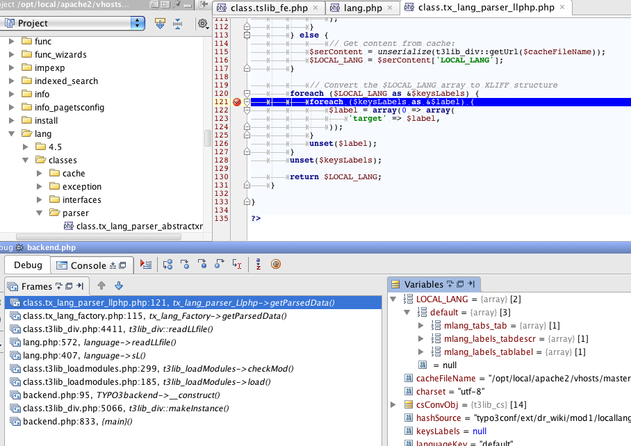
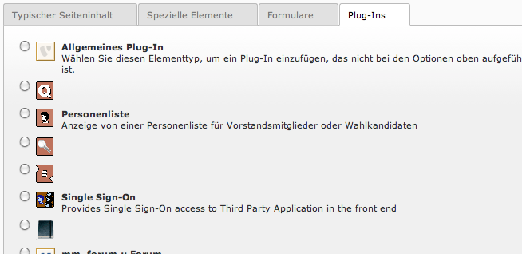

Task #27673
Feature #25397: Adding XLIFF support as the default format for translation
Add Parser for PHP locallang array
| Status: | Closed | Start date: | 2011-06-24 | |
|---|---|---|---|---|
| Priority: | Must have | Due date: | ||
| Assigned To: | Xavier Perseguers | % Done: | 100% |
|
| Category: | Default | Spent time: | - | |
| Target version: | - | |||
| TYPO3 Version: | 4.6 | Complexity: | ||
| PHP Version: | 5.3 | Sprint Focus: |
Description
Implement the PHP locallang array parser based on code from t3lib_div::readLLPHPfile()
{kind=link}
{kind=link}
Associated revisions
[TASK] Add Parser for PHP locallang array
Implement the parser to support LLPHP file as localization file format.
Change-Id: I4e4d66e73d92eae57663b8e905db33a17da5cb2a
Resolves: #27673
[FEATURE] Add Parser for PHP locallang array
Implement the parser to support LLPHP file as localization file format.
Change-Id: I4e4d66e73d92eae57663b8e905db33a17da5cb2a
Resolves: #27673
Reviewed-on: http://review.typo3.org/2903
Reviewed-by: Steffen Gebert
Tested-by: Steffen Gebert
Reviewed-by: Dmitry Dulepov
Tested-by: Dmitry Dulepov
Reviewed-by: Stefan Neufeind
Tested-by: Stefan Neufeind
[BUGFIX] getLLL needs to fallback to default language
Change-Id: I592cbcbbfa60d08ddd7ebf928136a8b9c4fbe1da
Resolves: #27673
Reviewed-on: http://review.typo3.org/3127
Reviewed-by: Georg Ringer
Reviewed-by: Xavier Perseguers
Tested-by: Xavier Perseguers
History
#1 Updated by Xavier Perseguers about 4 years ago
- Tracker changed from Bug to Task
#2 Updated by Mr. Hudson about 4 years ago
Patch set 1 of change I4e4d66e73d92eae57663b8e905db33a17da5cb2a has been pushed to the review server.
It is available at http://review.typo3.org/2903
#3 Updated by Xavier Perseguers about 4 years ago
- Status changed from New to Under Review
#4 Updated by Xavier Perseguers about 4 years ago
- Status changed from Under Review to Resolved
- % Done changed from 0 to 100
Applied in changeset 3e26b75abc7a9af5185314c9fec947ce67f780cd.
#5 Updated by Xavier Perseguers about 4 years ago
- Status changed from Resolved to Under Review
- % Done changed from 100 to 0
Well, I don't understand how status has been changed because I did not write previous comment. Anyway, this patch has not been submitted and is still under review in Gerrit.
@Steffen: Could you please describe how to reproduce the problem you face? Don't have it myself.
#6 Updated by Steffen Gebert about 4 years ago
Oh, that's really weird.. Don't understand, why forge closes an issue. We should keep an eye on this!
Install EXT:dr_wiki and reload the backend. This triggers the error (even without this patch). I'll file a new issue, as I now found out, how to reproduce.
#7 Updated by Steffen Gebert about 4 years ago
Sorry, stupid.. forget.. I suggest to handle it within this issue, as it's only reproducible with this change.
#8 Updated by Mr. Hudson about 4 years ago
Patch set 1 of change I6e7f3abc02c9121c3600076d0c6c2e4d092af41b has been pushed to the review server.
It is available at http://review.typo3.org/2929
#9 Updated by Mr. Hudson about 4 years ago
Patch set 1 of change Ia59a77757112bccbf7a53ebeec71928f06ebe02a has been pushed to the review server.
It is available at http://review.typo3.org/2930
#10 Updated by Mr. Hudson about 4 years ago
Patch set 2 of change I6e7f3abc02c9121c3600076d0c6c2e4d092af41b has been pushed to the review server.
It is available at http://review.typo3.org/2929
#11 Updated by Mr. Hudson about 4 years ago
Patch set 2 of change Ia59a77757112bccbf7a53ebeec71928f06ebe02a has been pushed to the review server.
It is available at http://review.typo3.org/2930
#12 Updated by Mr. Hudson about 4 years ago
Patch set 3 of change Ia59a77757112bccbf7a53ebeec71928f06ebe02a has been pushed to the review server.
It is available at http://review.typo3.org/2930
#13 Updated by Mr. Hudson about 4 years ago
Patch set 4 of change Ia59a77757112bccbf7a53ebeec71928f06ebe02a has been pushed to the review server.
It is available at http://review.typo3.org/2930
#14 Updated by Mr. Hudson about 4 years ago
Patch set 5 of change Ia59a77757112bccbf7a53ebeec71928f06ebe02a has been pushed to the review server.
It is available at http://review.typo3.org/2930
#15 Updated by Mr. Hudson about 4 years ago
Patch set 6 of change Ia59a77757112bccbf7a53ebeec71928f06ebe02a has been pushed to the review server.
It is available at http://review.typo3.org/2930
#16 Updated by Mr. Hudson about 4 years ago
Patch set 7 of change Ia59a77757112bccbf7a53ebeec71928f06ebe02a has been pushed to the review server.
It is available at http://review.typo3.org/2930
#17 Updated by Mr. Hudson about 4 years ago
Patch set 8 of change Ia59a77757112bccbf7a53ebeec71928f06ebe02a has been pushed to the review server.
It is available at http://review.typo3.org/2930
#18 Updated by Mr. Hudson about 4 years ago
Patch set 9 of change Ia59a77757112bccbf7a53ebeec71928f06ebe02a has been pushed to the review server.
It is available at http://review.typo3.org/2930
#19 Updated by Mr. Hudson about 4 years ago
Patch set 1 of change Ie4b4146c7e0989093d0e57a0f63d4723a2c90f33 has been pushed to the review server.
It is available at http://review.typo3.org/2932
#20 Updated by Mr. Hudson about 4 years ago
Patch set 2 of change I4e4d66e73d92eae57663b8e905db33a17da5cb2a has been pushed to the review server.
It is available at http://review.typo3.org/2903
#21 Updated by Mr. Hudson about 4 years ago
Patch set 3 of change I4e4d66e73d92eae57663b8e905db33a17da5cb2a has been pushed to the review server.
It is available at http://review.typo3.org/2903
#22 Updated by Mr. Hudson about 4 years ago
Patch set 4 of change I4e4d66e73d92eae57663b8e905db33a17da5cb2a has been pushed to the review server.
It is available at http://review.typo3.org/2903
#23 Updated by Steffen Gebert about 4 years ago
- File error.png added
Ends up with a PHP warning:
PHP Warning: Invalid argument supplied for foreach() in /opt/local/apache2/vhosts/master/typo3_src/typo3/sysext/lang/classes/parser/class.tx_lang_parser_llphp.php line 121

#24 Updated by Steffen Gebert about 4 years ago
It's because the second entry (which is weird..) in $LOCAL_LANG is null.
#25 Updated by Mr. Hudson about 4 years ago
Patch set 5 of change I4e4d66e73d92eae57663b8e905db33a17da5cb2a has been pushed to the review server.
It is available at http://review.typo3.org/2903
#26 Updated by Mr. Hudson about 4 years ago
Patch set 6 of change I4e4d66e73d92eae57663b8e905db33a17da5cb2a has been pushed to the review server.
It is available at http://review.typo3.org/2903
#27 Updated by Steffen Gebert about 4 years ago
- File fallback.png added
Fallback doesn't work, see e.g. EXT:quickpoll

#28 Updated by Mr. Hudson about 4 years ago
Patch set 7 of change I4e4d66e73d92eae57663b8e905db33a17da5cb2a has been pushed to the review server.
It is available at http://review.typo3.org/2903
#29 Updated by Mr. Hudson about 4 years ago
Patch set 8 of change I4e4d66e73d92eae57663b8e905db33a17da5cb2a has been pushed to the review server.
It is available at http://review.typo3.org/2903
#30 Updated by Mr. Hudson about 4 years ago
Patch set 9 of change I4e4d66e73d92eae57663b8e905db33a17da5cb2a has been pushed to the review server.
It is available at http://review.typo3.org/2903
#31 Updated by Xavier Perseguers about 4 years ago
- Status changed from Under Review to Resolved
- % Done changed from 0 to 100
Applied in changeset 5ffccffe7e4ed5ab3f5ee18c01741a55af0e303a.
#32 Updated by Xavier Perseguers over 3 years ago
- Status changed from Resolved to Closed
#33 Updated by Ernesto Baschny about 2 years ago
- Target version deleted (
1281)